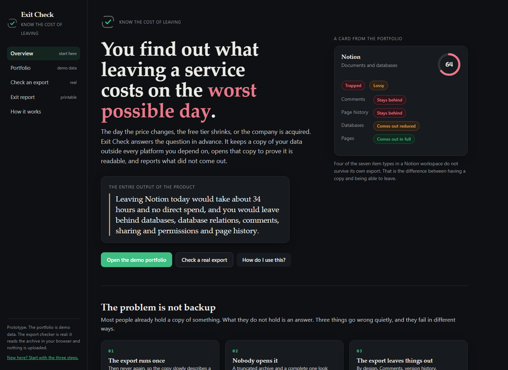
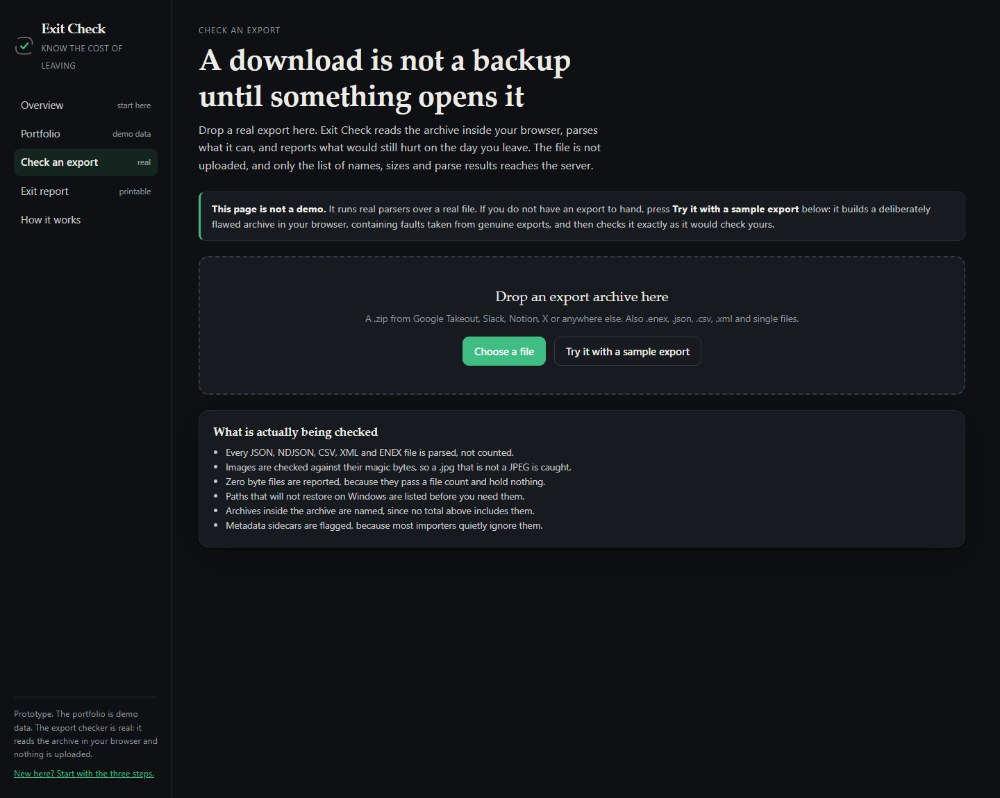
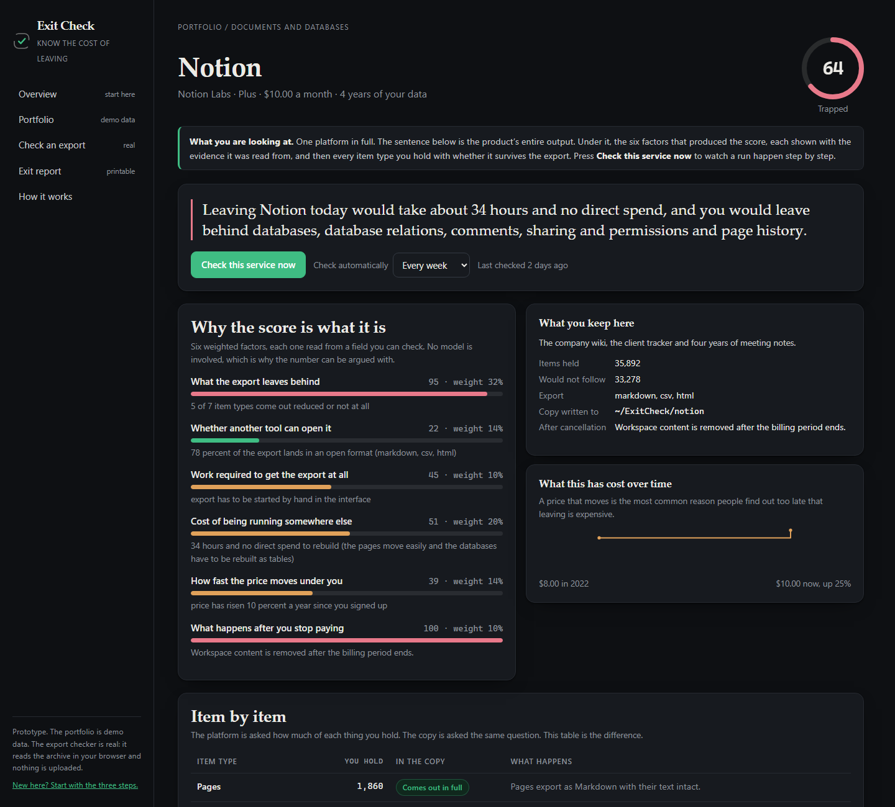

A product study, Part 2
Which is also the day you have the least time to deal with it. Exit Check answers the question in advance, and keeps answering it every week.
Leaving Notion today would take about 34 hours and no direct spend, and you would leave behind databases, database relations, comments, sharing and permissions and page history.
That sentence is the entire product. Everything else exists to make it true.
Most people already have a copy of something. What they do not have is an answer. A folder of downloaded archives says nothing about whether the files open, whether anything is missing, or how many days of work sit between them and being operational somewhere else.
Three things go wrong quietly. Exports run once and never again. Exports download and never get opened, so a truncated archive looks identical to a complete one. And exports leave things behind on purpose, because comments, version history, permissions and relations are usually not in any export format at all.
None of that is visible until the price changes, the free tier shrinks, the company is acquired, or the feature you organised your work around is removed.
No new way out is invented. The published export is used, every day, week or month, without anyone remembering to.
Your disk, your storage, your machine. Exit Check never holds the only copy. Replacing one dependency with another is not an exit.
Every structured file is parsed. Images are checked against their real bytes. Then the copy is compared with the platform, item type by item type.
How many hours, how much money, and exactly what would be left behind.
Every platform gets a score from 0 to 100. Six factors, each weighted, each read from a field you can inspect. No model is involved anywhere in the product, because a number you cannot argue with is a number you cannot trust.
| Factor | Weight | Read from |
|---|---|---|
| What the export leaves behind | 0.32 | coverage per item type, and the measured share that survives |
| Cost of being running somewhere else | 0.20 | hours and spend to be operational elsewhere |
| Whether another tool can open it | 0.14 | share of exported bytes in open formats |
| How fast the price moves under you | 0.14 | compound annual growth of the price you pay |
| Work required to get the export | 0.10 | API, manual action, emailed request, or none |
| What happens after you stop paying | 0.10 | read only, grace period, or deletion |
One rule overrides the arithmetic. If more than a quarter of what you hold cannot be exported at all, the service counts as trapped whatever the weighted score says, because moving quickly does not help with data that never comes out.
| Service | Score | Band |
|---|---|---|
| Notion | 64 | Trapped |
| Evernote | 54 | Trapped |
| Slack, free plan | 53 | Trapped |
| Figma | 46 | Sticky |
| Google Photos | 28 | Portable |
| GitHub | 26 | Portable |
Slack scores 53 on the weighted factors and is still trapped: 94 percent of six years of messages cannot be exported on the free plan at all.
Run against a sample export containing faults observed in genuine archives:
4 files listed but not readable
A settings file with a trailing comma. A CSV whose rows stopped matching the header. An ENEX cut off mid element.
A photo that is not a photo
Named .jpg, and the first bytes are an HTML error page the export server returned.
A zero byte attachment
It passes a file count and holds nothing.
Dates stranded in sidecar files
Present in the archive, ignored by every importer, and therefore lost in practice.
A working prototype exists. It runs as a single application with no database and no keys, and the archive checker is not a mock: drop a genuine export into it and it parses what is inside.

The front door. What it is, what it produces, and a three step walkthrough for a first visit.

The checker. The archive is read in the browser and never uploaded, so only names, sizes and parse results reach the server.
81 end to end checks, across 12 user journeys
A first visit, running a check and watching it stream, changing a schedule, checking a real archive, feeding the endpoint rubbish, adding and removing a service, printing the report, a week of unattended scheduled runs, broken links, the scoring model on its own, and archive shapes the checker has never seen. All 81 pass.
21 stress cases, all inside budget
A 120,000 file manifest scores in 0.6 s. A real 12,000 file zip opens and parses in 1.1 s. A file that is not a zip is refused in 1 ms. 200 concurrent report requests in 2.0 s, and 12 people watching a check run at once all finish. Unicode paths, 4,000 character paths, 500 nested archives and an archive of nothing but empty files are each handled rather than crashed on.
Individuals and small teams with years of work inside subscription tools. The same people who switch note apps after a price rise, and discover the cost afterwards.
$6 a month, fixed for three years, then capped at ten percent a year. Cancelling leaves your copies where they already are, on your own storage, because they were never held here.
Every service in that portfolio is trusted with something irreplaceable, and not one of them publishes what leaving would cost. That number should not be a surprise.

One platform in full. Every factor shows the sentence it was read from, and the inventory names what stays behind.
Nothing to install beyond the dependencies, nothing to sign into, no keys.
Six platforms, each with a score and a sentence. Green means you could walk out this week. Red means some of it is never coming back.
The run streams live, step by step, and finishes by naming what the export leaves behind.
This part is not a demo. Drop in a genuine export, or press the button that builds a deliberately flawed sample in your browser.
Run it
cd 02-prototype && npm install && npm run dev
Test it
npm run build && npm start -- -p 3400 then npm run test:e2e and npm run test:stress
Deploy it
npx vercel (one project, no database, no keys)